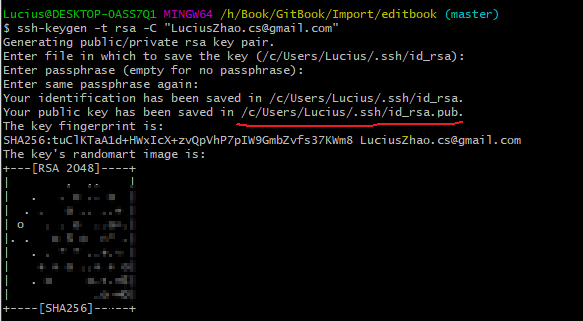
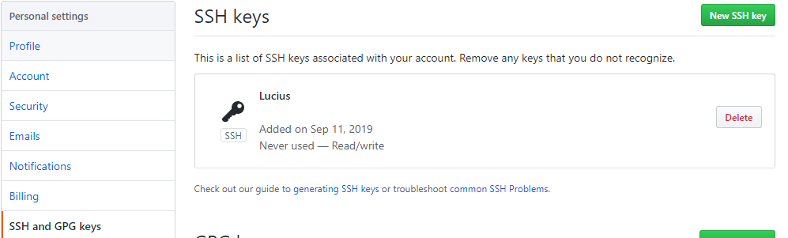
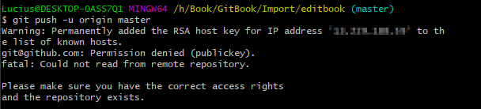
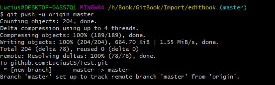
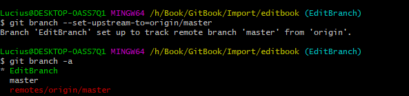
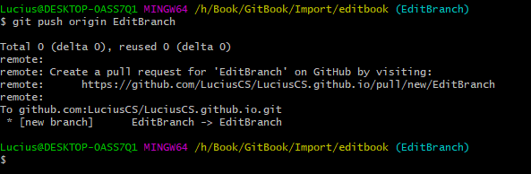

常用Git操作
一、将本地已有仓库推送到远程仓库
1、将本地仓库与远程仓库建立关联
git remote add github git@github.com:Lucius/GitTest.git查看本地仓库与远程仓库关联情况
git remote -v删除与远程仓库关联
git remote rm origin2、设置用户名和密码
git config -global user.name "" git config -global user.email ""- 3、设置SSH Key,
生成SSH Key
-t 指定密钥类型，默认是 rsa ，可以省略。 -C 设置注释文字，比如邮箱。 -f 指定密钥文件存储文件名。  在GitHub中设置SSH，即将.ssh.id_rsa.pub中的内容添加到Key中 ssh-keygen -t rsa -C "your_email@example.com" - 4、建立本地到上游（远端）仓的链接，建立链接后代码才能提交上去
当本地仓库与远程仓库没有相同的commit时，git不允许提交会出现git branch --set-upstream-to=originfatal: refusing to merge unrelated histories错误，需要使用下面命令：git pull origin master --allow-unrelated-histories - 5、将本地仓库推送至远端
如果出现Permission denied(publickey)，则说明第3步中的公钥配置错误  推送正常 git push -u origin master
二、将本地分支提交到远程
1、建立本地到上游（远端）仓的链接
git branch --set-upstream-to=origin
2、拉取远程分支内容
git pull --allow-unrelated-histories- 3、将本地分支推送至远程
git push origin EditBranch
三、合并多次提交
git rebase -i HEAD~3
如果在合并的过程中出现冲突需要先解决冲突，再进行合并
git rebase --continue
如果放弃本次合并，使用
git rebase --abort
四、Git多用户进行管理
需要为每一个仓库设置user、email
- 第一步：取消git的global用户以及邮箱
git config --global --unset user.name
git config --global --unset user.email
- 第二步：在不同的仓库中配置不同的user、email,然后就可以愉快地使用了,第一次为仓库添加user、email在push的时候需要输入密码进行验证。
git config user.email "xxxx@xx.com"
git config user.name "xxxx"
五、git reset --hard --soft与git revert
git reset --hard HEAD~1修改版本库、修改暂存区、修改工作区；将版本库回退一个版本，但是不仅仅将本地版本库的头指针全部重置到指定版本，也会重置暂存区，并将工作代码也回退到这个版本。
git reset --soft HEAD~1修改版本库、保留暂存区、保留工作区；将版本库回退一个版本，且将这次提交之后的所有变更都移动到暂存区。
git revert与git reset区别
git reset指向原地或者向前移动指针,直接删除commit，git revert创建一个逆向commit来覆盖之前commit,指针向后移动。- 在后续合并旧版本时，
git revert的部分不再出现；而git reset在合并旧版本时，这些被回滚的提交还会再次被引入。
撤销 git reset
git reflog 查看操作历史，找到之前 HEAD 的 hash 值，然后 git reset --hard 到那个 hash 即可
六、git cherry-pick使用方法
将某一个分支的提交，引入到当前分支的提交上，即合并某一分支的部分提交。
git cherry-pick <commit id>:单独合并一个提交
git cherry-pick -x <commit id>：同上，不同点：保留原提交者信息。
git cherry-pick <start-commit-id>..<end-commit-id>：(左开右闭，不包含start-commit-id)的提交cherry-pick到当前分支